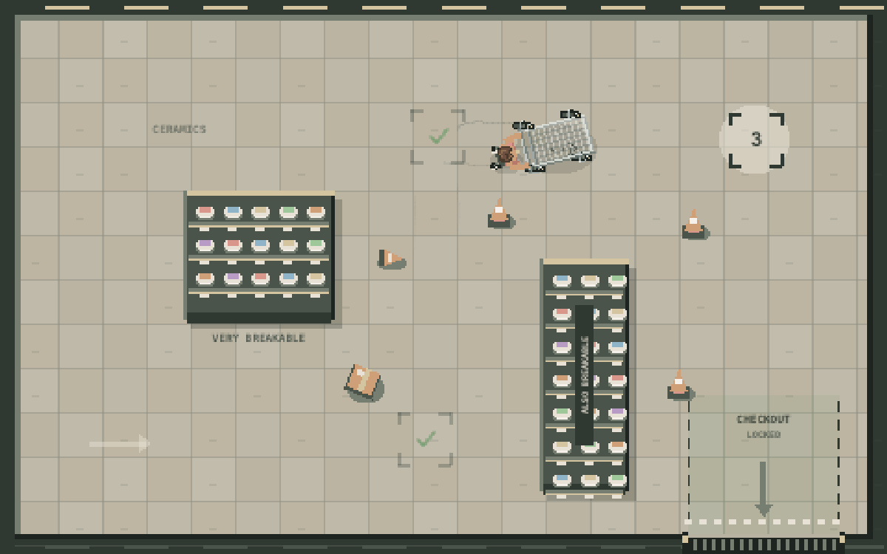
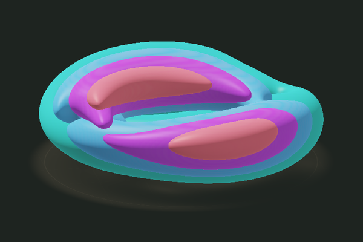
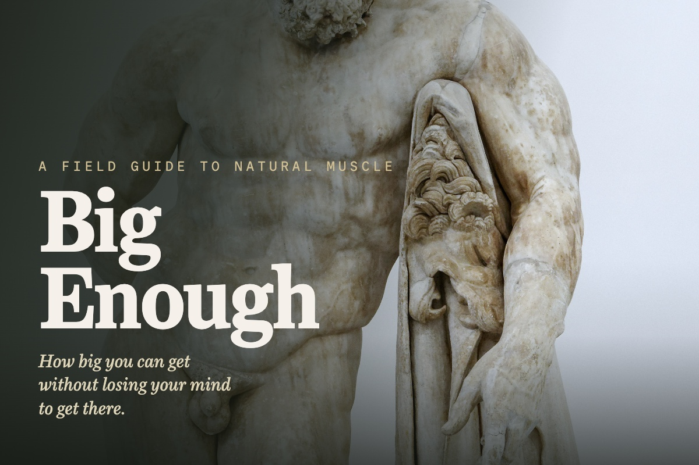

-

Negative temperature
Two paddles stir a live superfluid. Dark vortex cores move through the luminous field and collect into groups with matching circulation.
-
How Long Can You Live?
One verified person has lived past 120. How unlikely another birthday becomes at 110, and what a calorie-restriction trial actually measured.
-

The Zhuangzi
A crooked tree survives because nobody wants its wood. Zhuangzi asks how to live when our judgments, plans, and ideas about ourselves stop fitting the world.
-

All Four Wheels
a cart with four swivel wheels on the long way round. Dirt, blacktop, red and white curbs, and a shortcut through the groceries. See how far you can get.
-
Hunting Game
my Unity hunting game, rebuilt in JavaScript. Pick an hour, walk to the stand, and bring back a pack to sell. Wind, blood trails, a tracking dog, and a second area to earn.
-

Hydrogen Exactly
Turn a hydrogen electron's probability cloud in 3D. Watch an excited wave packet spread, split into peaks, and partly return; hover over its colored layers to read their density.
-
Undertow
Stir a live fluid. Gold, blue and coral dye stretch into ribbons and fold around vortices; drag to push the flow and add more dye.
-

Water, Smoke, and Slime
a physics toy built from my mining game's three engines: GPU water, soft-body slimes, and real fluid smoke in one box. Draw walls and everything collides with them.
-
How to Think, and What's Real
How to think and what is real, from Plato and Aristotle to Darwin and Deutsch, each argument walked one move at a time, the dissenters kept in.
-

Staying Alive
How to take care of the one body you get: muscle, the heart, food, sleep, and the rest. The actionable science, with the hype stripped off.
-
The Inner Life
Meaning, the mind, and how to bear a life: Frankl, the spirituality of imperfection, and the truth about every kind of meditation.
-

What's Under a Saint Paul Street
Explore Saint Paul storm pipes, sewers, hydrants, cables and geology, with public records and photographs of mapped places.
-

How far can we forecast the weather?
An illustrated tour of the physics, observations, and uncertainty behind weather forecasts, with ensembles, changing forecast horizons, and a live Lorenz model you can adjust.
-

Claude Recommends
I asked Claude for music, films and television to try. Browse its selections, read short descriptions, and copy music names into a playlist importer for matching.
-

Do You Get Used to Everything?
Why some sensations fade while losses still matter. A visual experiment and evidence from lottery winners, chocolate eaters and chess players separate several kinds of getting used to things.
-

The Physics That Sounds Made Up
Clocks, gravity, interference and entanglement, explained through experiments and annotated diagrams. An illustrated guide to modern physics that distinguishes what was measured from what remains unsettled.
-

The DSM: What a Diagnosis Can Tell You
What a psychiatric diagnosis can tell you, where biological tests help, and why clinicians sometimes disagree. A sourced guide to common conditions, diagnostic boundaries and useful questions.
-

The Far Side of the Body
Rare conditions separate abilities we usually experience together. Twenty-one cases explore pain, sleep, memory and movement, with each study's limits kept beside the findings it can support.
-

The 7 Habits of Highly Effective People
Covey separates choosing what matters from making time for it. His seven habits explain personal responsibility, trust, listening, and cooperation, with practical examples and the limits beside them.
-

Star Signs, X-Rayed
An approximate birth chart, a generic reading, and a blinded matching test separate celestial positions, astrological conventions, and claims about personality. Try the controls and compare the evidence.
-

There's Nothing New Under the Sun
Old complaints, imperfect happiness studies, and twelve versions of advice about other people. An illustrated essay on what repeats in human life, and what doesn't.
-

Five Hundred Children, No Books
Would children invent religion without inheriting one? An island thought experiment meets child psychology, AA, the Americas and secular rites, with the evidence's limits beside each case.
-

Photographs and how they were made
A gallery of motion studies, portraits and space images, with explanations of exposure, color, composites and retouching, plus working comparisons, panoramas and credits for every photograph.
-

The Number: How Much Would You Need to Retire?
How much would you need to stop working? A calculator connects spending, debt and saving time, while the withdrawal research and tax rules show what its estimate leaves out.
-

Sure Things, Open Questions
Eighteen illustrated questions about the universe, matter, minds and proof. Each separates established mechanisms from the narrower question still open, with sources and image credits beside the claim.
-

A Field Guide to Internet Chum
Those “Around the Web” thumbnails are often paid placements. Ten familiar designs explain what the picture withholds, who earns the click, and when the promise becomes deception.
-

The First Year
Feeding, sleep, illness and safety through a baby's first year, with a short practical route, source-linked reference chapters and tools for preparing questions for the care team.
-

What's Actually on an MRI Disc
I asked for my MRI on a disc and got 1,189 image files. Browse selected brain and spine slices, then rotate two models and see what their processing changes.
-

From the Machine to the Atom
Factory photographs and micrographs follow silicon from crystal growth to chip wiring and atomic columns, with sixteen zoomable images and explanations of what each device and scale reveals.
-

The Third Thing: What We Choose
Genes and upbringing shape us without settling every choice. Service dogs, twin research and an old court ruling help separate inherited risk from moral responsibility.